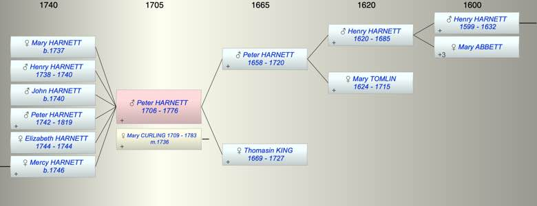

| [Index] |
| Peter HARNETT (1706 - 1776) |
|  |
| b. 1706 at St Laurence |
| m. 04 Dec 1736 Mary CURLING (1709 - 1783) at St Margaret, Canterbury |
| d. 10 May 1776 at St Laurence aged 70 |
| Parents: |
| Peter HARNETT (1658 - 1720) |
| Thomasin KING (1669 - 1727) |
| Siblings (3): |
| Henry HARNETT (1695 - ) |
| James HARNETT (1702 - 1719) |
| Edward HARNETT (1708 - 1719) |
| Children (6): |
| Mary HARNETT (1737 - ) |
| Henry HARNETT (1738 - 1740) |
| John HARNETT (1740 - ) |
| Peter HARNETT (1742 - 1819) |
| Elizabeth HARNETT (1744 - 1744) |
| Mercy HARNETT (1746 - ) |
| Grandchildren (1): |
| James STOCK (1771 - ) |
| Events in Peter HARNETT (1706 - 1776)'s life | |||||
| Date | Age | Event | Place | Notes | Src |
| 1706 | Peter HARNETT was born | St Laurence | |||
| 1720 | 14 | Death of father Peter HARNETT (aged 62) | |||
| 1727 | 21 | Death of mother Thomasin KING (aged 58) | |||
| 04 Dec 1736 | 30 | Married Mary CURLING (aged 27) | St Margaret, Canterbury | Note 1 | |
| 1737 | 31 | Birth of daughter Mary HARNETT | Lydden | bap Lydden 18 Sep 1737 ex FS | |
| 1738 | 32 | Birth of son Henry HARNETT | Lydden | bap Lydden 28 Jan 1738 ex FS | |
| 1740 | 34 | Birth of son John HARNETT | Lydden | Note 2 | |
| 1740 | 34 | Death of son Henry HARNETT (aged 2) | Lydden | buried 6 Apr 1740 ex FMP PR | |
| 1742 | 36 | Birth of son Peter HARNETT | Lydden | bap Lydden 25 Jul 1742 ex FS | |
| 1744 | 38 | Birth of daughter Elizabeth HARNETT | Lydden | bap Lydden 6 May 1744 ex FS | |
| 1744 | 38 | Death of daughter Elizabeth HARNETT | Lydden | Note 3 | |
| 1746 | 40 | Birth of daughter Mercy HARNETT | Lydden | Note 4 | |
| 10 May 1776 | 70 | Peter HARNETT died | St Laurence | Note 5 | |
| Personal Notes: |
|
Peter Harnett – Will Summary
PROB 11/1020 Made 9th day of illegible month 1776 proved 28 Jun 1776 • Will of Peter Harnett of St Laurence, Isle of Thanet, Yeoman • To wife Mary Harnett for her lifetime his messuages, tenements, real estate and at her decease to his two sons John and Peter and their heirs • All financial holdings and goods, chattels and personal estate to be willed by his wife to their children • Wife Mary and brother William (Curling) to be executors Witnesses Mary Friend Corn. Nash and John Fagg |
| Created on a Mac™ using iFamily for Mac™ on 8 Oct 2023 |